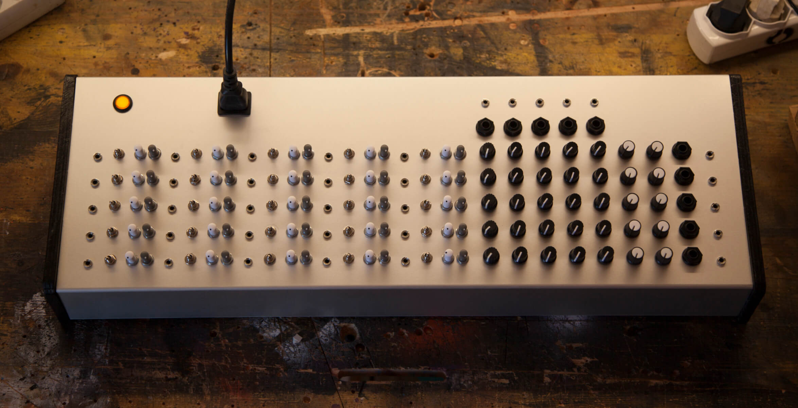

Matrix Mixers
10x10 Matrix Mixer w/ variable output gain input+output mutes, PFL and main out bus — featured in this video
[...]and still he’d see the matrix in his sleep, bright lattices of logic unfolding across that colorless void . . .
William Gibson - Neuromancer
Total Connectivity
Custom high-end Matrix Mixers for unleashed signal routing
What is a Matrix Mixer
Traditional mixers have some inputs and one output, and knobs or faders to combine the inputs into the output in arbitrary amounts.
A Matrix Mixer has some inputs and some outputs, and a matrix of knobs to send any input to any output, in any amount, independently.
With a Matrix Mixer you have total control of the signal flow, you can bend it and twist it into all sorts of paths, with loops, crossings and intertwines, weaving signals like threads.
The system you create can be simple and linear or very intricate, it can be in perfect equilibrium, or constantly changing.
It can be a tidy way to distribute signals, or a complex feedback network.
You can have every single signal path under tight control, or take advantage of the analog voodoo effect
Specs
All of our mixers are active, inputs and outputs are buffered and protected...learn more
See also customization and how to order
Gallery
Matrix Mixers
6x6 Stereo Matrix Mixer w/ variable output gain, stereo balance and multiple connectors
5x5 Matrix Mixer standard version w/ 1/4" Jacks
5x5 Matrix Mixer standard version w/ 1/4" Jacks and output mutes
8x8 Matrix Mixer w/ Pluck'n'Duck VCAs on outputs, input inserts, master gain, variable output gain and multiple connectors
5x5 Matrix Mixer w/ input/output mutes, Pluck'n'Duck VCAs on outputs, PFL, submix out variable output gain and multiple outputs
VCA Matrices
Synth engines — learn more...
10x10 Matrix Mixer w/ 100 channels Pluck'n'Duck VCA matrix, variable output gain, dual-mode mutes and multiple connectors — featured in this video
5x5 Matrix Mixer w/ Pluck'n'Duck VCA matrix, variable output gain, output mutes and multiple connectors — featured in this video
5x5 Matrix Mixer w/ Pluck'n'Duck VCA matrix, double outputs with variable gain, dual-mode mutes and multiple connectors

5x5 Matrix Mixer w/ multiple connectors, Pluck'n'Duck VCA matrix, variable output gain, variable output gain, main out bus and mono-to-stereo panning
5x5 Matrix Mixer w/ Pluck'n'Duck VCA matrix, variable output gain, output mutes and multiple connectors
Hybrid Mixers
Best of both worlds
Hybrid Mixer w/ mutes and PFL, Pluck'n'Duck VCAs on inputs, variable input gain, mono-to-stereo panning, master 75mm stereo faders and a 4x4 send/return matrix

10x10 Matrix Mixer w/ multiple connectors, Pluck'n'Duck VCAs on outputs and custom high-voltage piezo transducer drivers
12x12 Matrix Mixer w/ variable input gain and microphone preamps